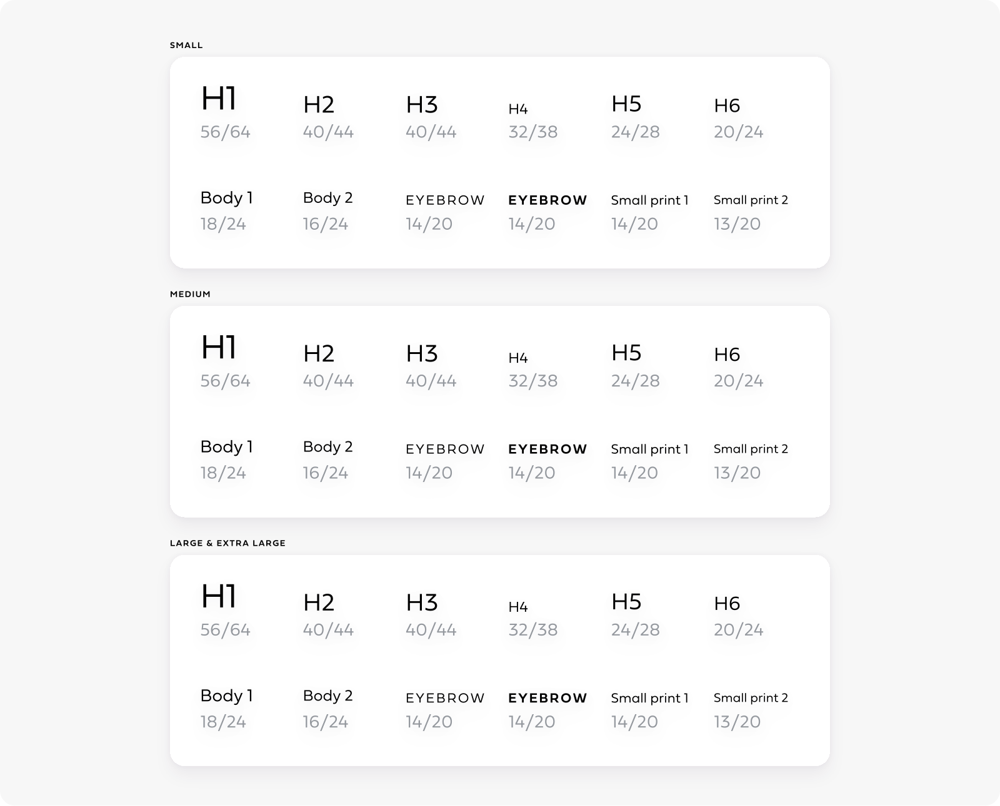
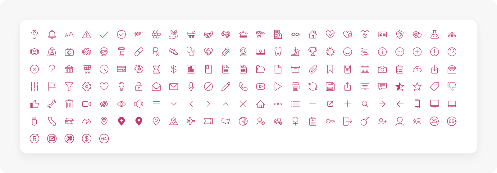
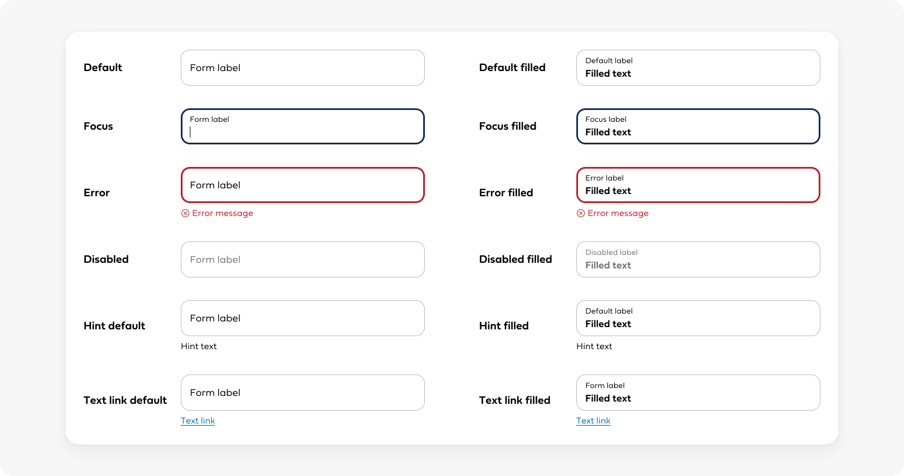
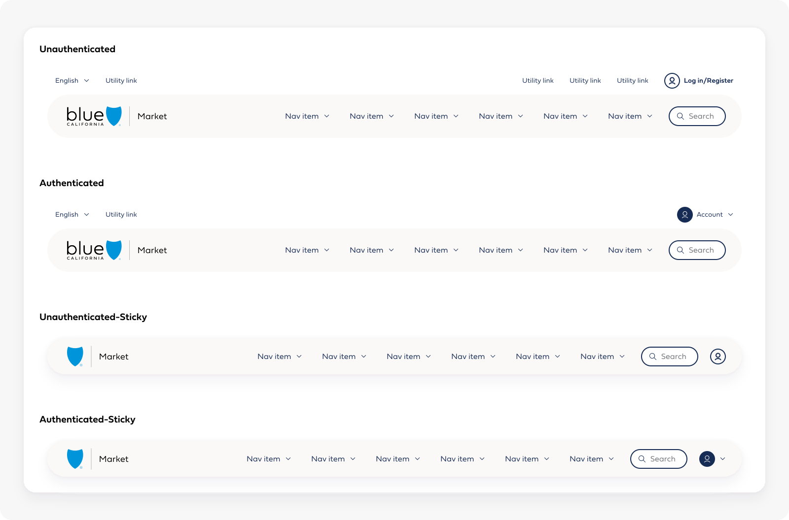
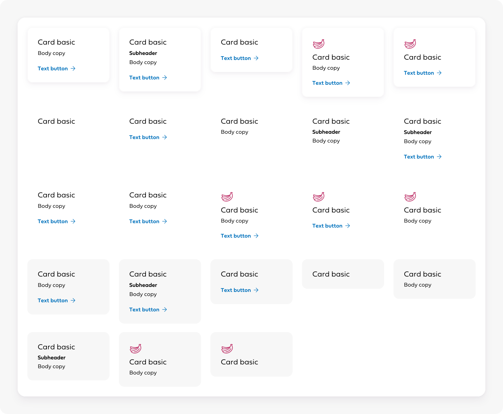
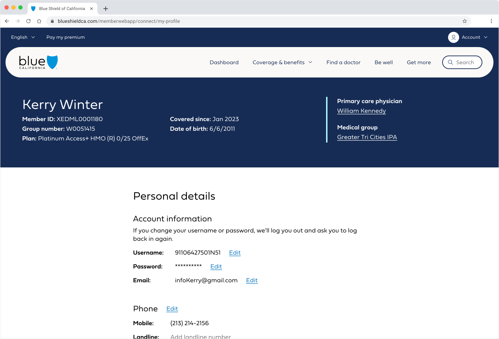
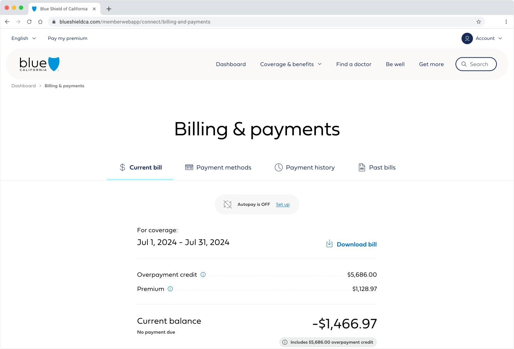
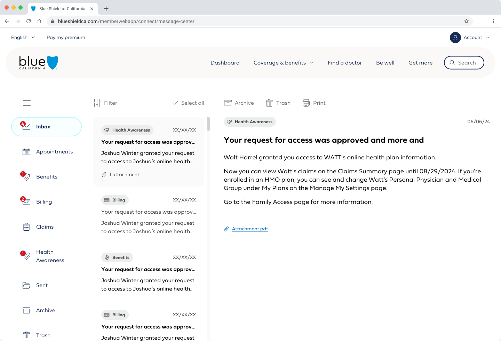
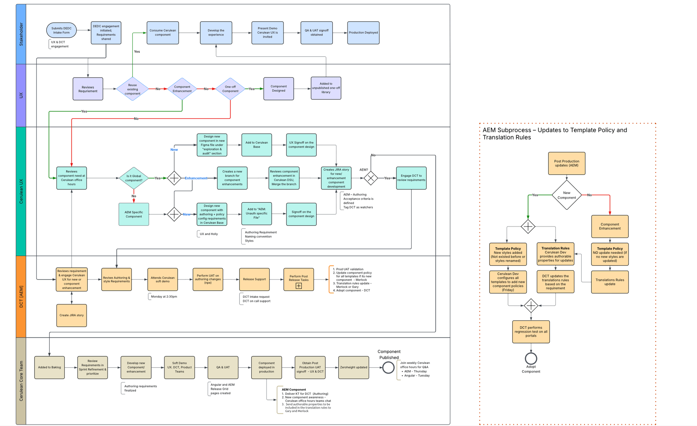

2024 – present
Cerulean Design System, Blue Shield of California
Up until 2024, BSC did not have centralized guidelines and resources for design and code leading to tech debt, decreased efficiencies, and an inconsistent user experience.
Project purpose
By having rules and patterns for design and code through the use of centralized components, we are increasing the efficiency of product teams, creating a more consistent user experience, and making the most of team budgets.
How does this work support organizational goals?
The Cerulean design system works horizontally across the digital & customer experience organization supporting all product teams to deliver demanding yearly initiatives high quality experiences on time and within budget, .
Measurable Impact
The below metrics apply to modules where the design system has been adopted.
- 35% reduction in lines of code
- 50% reduction in development time
- Reskinned modules are on average 90% reusable components
Cerulean Product Team Members
- Diana Rios, Product Manager
- Lazarus Pachigalla, Product Manager
- Swapna Ambu, Project Manager
- Nicole Berman, Principal Product Designer
- Jennifer Chapman, Principal Product Designer
- Talia Bowles, Lead Product Designer
- Vikas Lnu, Angular Developer
- Mahmud Karim, Angular Developer
- Bibin Kattakayam Chandy, AEM Developer
- Ajay Kumar Cherukupally, AEM Developer
- Rajini Challa, QA Analyst
Establishing a Design Sysytem
- Foundational Styles
- Components
- System Adoption
- Intake Process
- Maintenance & Ongoing Support
- System Processes
- Development
- Organizational Adoption
Foundational Styles
Foundational styles and components include our colors, type ramp, grid, icons, etc. These elements are the foundation for the design system.

Type ramp

Icons
Components
Components build on top of foundational styles. When designing and building, components were prioritized based on usage. This is also when we began distinguishing by codebase because we use Adobe Experience Manager(AEM) for the Content Management System and Angular for authenticated experiences. Some components needed to be built in both codebases and some were only needed in one based on use cases. Additionally, the content authoring experience needed to be designed when building the components for AEM.

Input field component states

B2C navigation states

Card basic styles
System Adoption
Now that the foundational styles and components were built, we needed to adopt the system across existing experiences. In Angular, this is done module by module. My profile, Message center, Billing & payments, Claims are all examples of modules. You can read my in-depth case study of the claims adoption for more insight into this process. In AEM, the adoption is done by component. The design team determines which old components should be swapped with which new Cerulean component, then the development team writes a script to automate the process across the site.

My profile

Billing & payments

Message center
Intake Process
As the design system is being adopted in existing experiences, the digital team is adopting it in their new projects. This prompted a need for an intake process for new component requests coming from product teams. The process below indicates how the product teams can properly engage the design system team for support to modify existing componenets or create new ones.

Intake process flow chart
Maintenance & Ongoing Support
The design system team hosts regular office hours for the larger digital team to share what they are working on. Designers are encouraged to bring work early on in the process so the system team can either offer alternative solutions that fit within the system or anticipate the need for new components or patterns.
Additional System Processes
Additional system processes have been established as the team and system have grown. Figma file changes are done in branches and sent for approval to either me or the Principal Product Designer who are also responsible for publishing those changes.
Backlog tickets can be created by anyone on the team. The ticket author needs to determine whether the update needs to be done in both codebases. A separate ticket should be created for each codebase. Then this ticket is shared in refinement and prioritized in the backlog.
UAT is owned by the designer who designed what is being tested. Release chats are created for each release to ensure all who are required are updated on deadlines or blockers like environments being down. The designer needs to leave all notes in the Jira UAT ticket so they can be easily tracked by development and QA.
Centralized Documentation
Phase 1: Microlibraries
The first phase of documentation were microlibraries - spearate files for component types. For example, form elements, navigation, cards were all separate microlibraries. These included the actual components in addition to all patterns and rules for those components.
Phase 2: ZeroHeight + Cerulean Base
The second phase was combining all the microlibraries into two libraries. Cerulean Base which included a majority of components and AEM Cerulean Base which included components only used in AEM. These files only contain the Figma components. All rules and patterns are documented in ZeroHeight, along with developer and content author guidance.
conducted internal UserZoom research to ensure that ZeroHeight is organized in a way that makes sense for everyone who uses it. On average, our testers successfully found the information they were looking for ~80% of the time. Feedback was also gathered in this research to continue improving the ZeroHeight experience.
Development
We are releasing work in our Angular codebase monthly and Adobe Experience Manager (AEM) codebase bi-weekly. This high volume of releases requires strong cross-functional collaboration between development, QA, and design.
Socialization
Another large effort in establishing a design system at a company that's never used one is socializing it. This means sharing with many different stakeholders across the organization who have varying knowledge on design systems and how it impacts their role. We approached these meeting by seeing how the design system impacted those stakeholders and sharing how adopting it best supports their work.